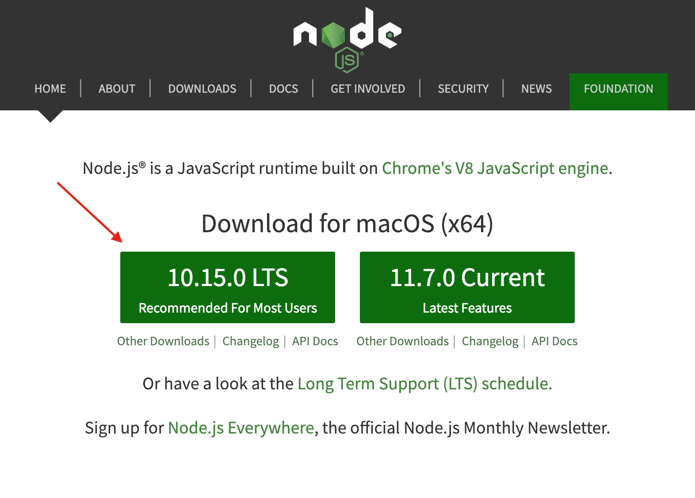
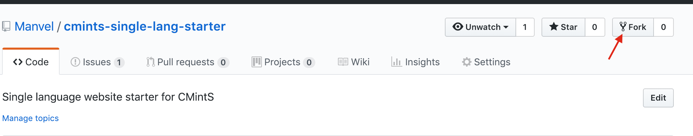
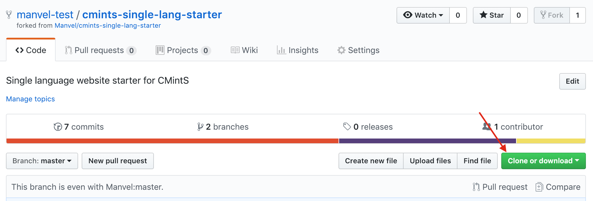
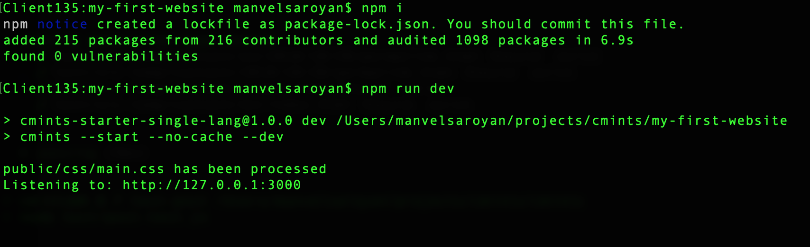

Launch and host your wesbite in no time
Assuming you have a Github Account.
Step 1: Install NodeJS

Step 2: Fork Current repository

Step 3: Clone it and navigate to that directory

Step 4: run commands below
npm i
npm run dev

Step 5: Navigate to http://127.0.0.1:3000
Hurray you are running current website locally! Now let's make some changes.
Step 6: Update current website the way you want.
You can learn more about CMintS here
Publishing to Github Pages
Step 1: Ensure to make the Generation Source branch gh-pages branch from the Repository settings
- .
- From the project root directory run following command
npm run deploy
- Navigate to the settings of the Github repository.
Publishing to Netlify
- Signup for Netlify if you don't have an account.
- After signing up click on New site from Git